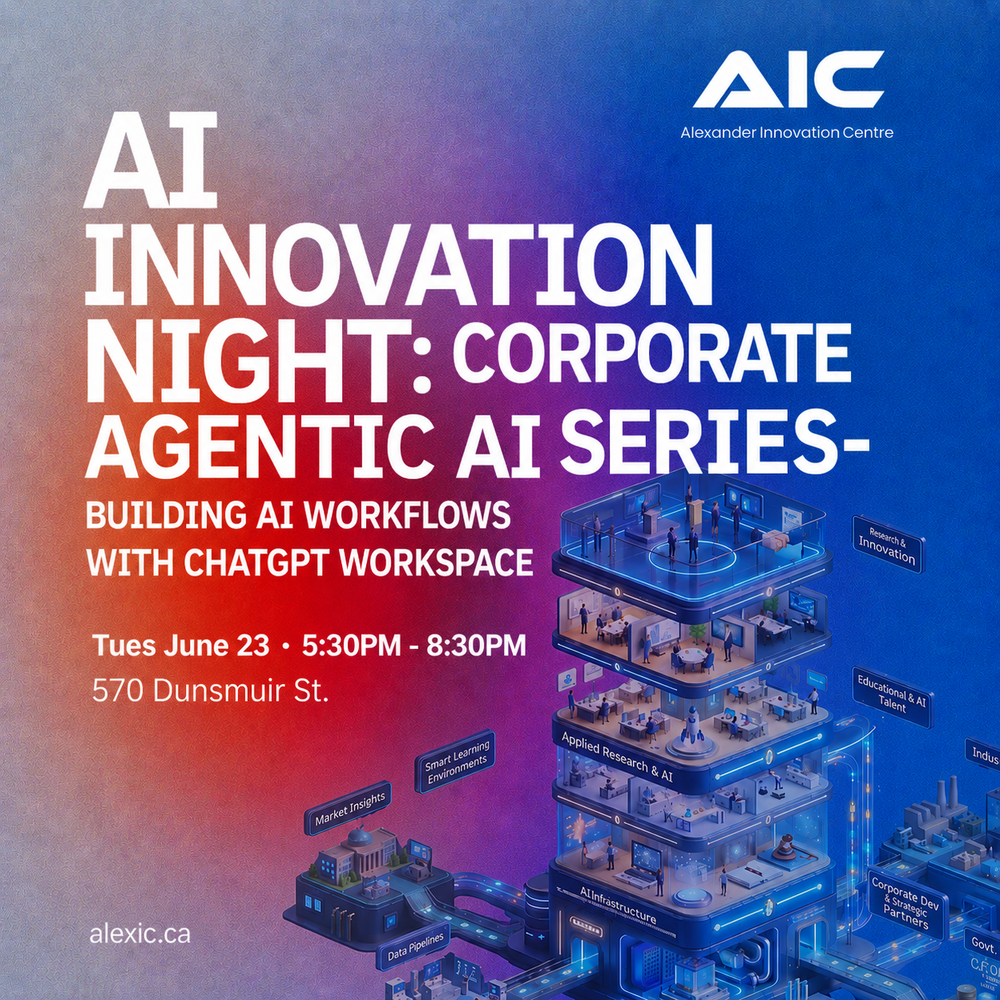

AI Workforce & SME Adoption
Assess readiness, train teams, implement responsible AI workflows, and measure impact.
Alexander Innovation Centre helps Canadian organizations move from AI curiosity to measurable impact. We train teams, support SME adoption, develop applied AI solutions, incubate ventures, and build trusted Canadian AI infrastructure, from downtown Vancouver.
Assess readiness, train teams, implement responsible AI workflows, and measure impact.
Practical pilots and prototypes with real-world partners, built for deployment.
From applied idea to validated pilot, product, and market-ready Canadian AI venture.
Staged Canadian-hosted capacity for trusted testing, deployment, and partner support.
01 About AIC
British Columbia has AI talent, ambitious organizations, and growing market demand. Alexander Innovation Centre exists to close the gap between AI possibility and practical deployment.
AIC is a British Columbia-based applied AI platform connecting workforce training, SME adoption, applied research, venture incubation, commercialization, and Canadian-hosted infrastructure, so people and organizations can use AI responsibly, confidently, and productively.
To help Canadian organizations turn AI ideas into trusted, measurable, and scalable real-world outcomes.
Build AI workforce skills · support SME adoption · conduct applied research · incubate and commercialize ventures · develop trusted Canadian AI infrastructure.
From AI curiosity to measurable impact.
Practical, responsible, and Canadian.
02 How AIC Works
We take talent and real problems from across BC's economy and move them through one disciplined engine into deployed, measurable outcomes.
Each core area turns those inputs into a specific outcome. Explore each in depth.
Assess → Train → Implement → Measure → Optimize.
You get: trained teams & deployed workflows → 02 · ResearchPartner problem → prototype → validated pilot.
You get: validated pilots & deployable solutions → 03 · CommercializationFounder → MVP → pilot customer → commercialization.
You get: market-ready Canadian AI ventures → 04 · InfrastructureCanadian-hosted testing & deployment environment.
You get: trusted, sovereign deployment →Flagship · Canadian agentic workflow & voice AI
ALEBEX AI is AIC's flagship Canadian agentic workflow and voice-AI platform, helping organizations respond faster, follow up consistently, and deliver better service, responsibly.
Voice calls, follow-up, routing, and admin workflows, built in Canada.
Discover ALEBEX AI →Public AI Literacy & Ecosystem Platform
A recurring forum for founders, employers, researchers, students, and investors, connecting AI skills, agentic workflows, SME adoption, responsible AI, ventures, education AI, and Canadian infrastructure. Next: Agentic Workflows in Action, June 23, 2026.
Free, open, and downtown.
See Innovation Nights →
Get Involved
Whether you're exploring AI adoption, looking for applied research, building a venture, or developing future-ready talent, AIC is built to help ideas become real.
04 Quick Answers
A Vancouver-based applied AI platform that supports AI workforce training, SME adoption, applied AI research, venture incubation, commercialization, and trusted Canadian AI infrastructure development.
Canadian SMEs, employers, founders, research partners, education organizations, and institutions that want practical AI training, implementation, innovation support, and trusted deployment pathways.
It helps employers and SMEs assess AI readiness, train staff, implement responsible AI workflows, measure impact, and plan ongoing optimization.
Executive strategy sprints, AI fundamentals, productivity skills, responsible AI & governance, role-based agent labs, manager and workflow redesign, and AI champion train-the-trainer.
AIC can help employers understand possible funding pathways and prepare training documentation. Employers apply directly to many government programs, and funding is not guaranteed.
It reviews whether an organization has the people, workflows, data, tools, governance, and leadership capacity needed to adopt AI responsibly.
The set of policies, processes, controls, and practices that help an organization use AI safely, transparently, fairly, and accountably.
ALEBEX AI is AIC's flagship Canadian agentic workflow and voice-AI platform for service, communication, follow-up, routing, and administrative automation.
AIC's public AI literacy and ecosystem-building event series, connecting Vancouver's founders, employers, researchers, students, and investors around practical applied AI.
AIC is developing staged Canadian-hosted AI infrastructure and data centre capacity to support applied research, ALEBEX AI, incubated ventures, and selected partner projects.
Contact AIC through the website and select your inquiry type. We route requests to the right core area or service and follow up.